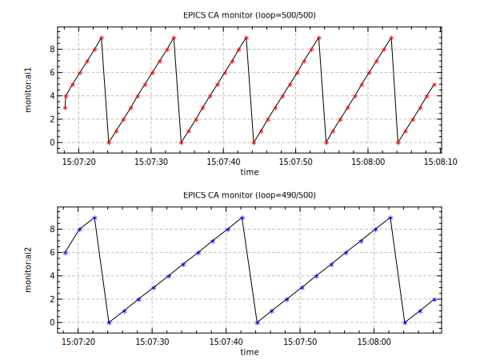

@ rec1 = monitor:ai1
@ rec2 = monitor:ai2
@ maxloop = 500
camon [rec1] > x1
camon [rec2] > x2
opt (gd:1 xl:"time" tf:"%H:%M:%S")
div 1 2
do loop 1 [maxloop]
title "EPICS CA monitor (loop=[loop]/[maxloop])"
cacheck x1,x2
if [x1.update]
set t=time(now)
cat t >> t1
cat x1 >> v1
plot t1 v1 (yl:"[rec1]" st:str sc:red bp:1)
fi
if [x2.update]
set t=time(now)
cat t >> t2
cat x2 >> v2
plot t2 v2 (yl:"[rec2]" st:str sc:blue bp:2)
fi
wait 0.1
end
caclose x1,x2

$ makeBaseApp.pl -t example test
$ makeBaseApp.pl -i -t example test
$ make
$ cd iocBoot/ioctest
edit “st.cmd”
...
#dbLoadTemplate "db/user.substitutions"
dbLoadRecords "db/dbExample2.db", "user=monitor, no=1, scan=1 second"
dbLoadRecords "db/dbExample2.db", "user=monitor, no=2, scan=2 second"
...
then run the IOC
$ chmod +x st.cmd
$ ./st.cmd